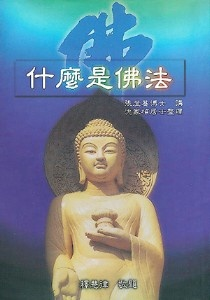
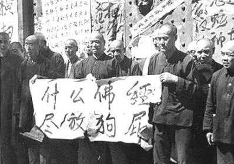

半分钱的故事
── 佛经佛书不可侮辱
冯冯
迷失在未来 / 誊录
我后来带了三本书去，其中之一是张澄基博士的大着“什么是佛法”，一本是简本的“阿弥陀经”，有白话文讲解的，还有一本是“观音菩萨灵感续录”（毛惕园居士编），N先生首先拿起“观音菩萨灵感录”来看，看得十分入神，看来是有一点点逗机了。
我欢喜得未免太早，他才看了几段，他的太太从外面回来了，沉着脸问：“什么书看得这样入迷？生意也不管了吗？”
“现在没有顾客呀！”N先生说。
N太太从他手上把书一把抢过来，瞪眼一看，立刻大发雷霆咆哮：“看这些反动大毒草迷信书刊。”
“看看有什么关系？”N先生说。
N太太也不回答，她突然把三本书都撕毁，她的动作奇快，N先生连抢救都来不及，她三下两下就把三本佛书撕成数片，抛到垃圾桶内。
“呸！”她一连吐了几口痰沫，吐在她撕毁的佛书上：“怪力乱神妖言惑众！迷信！”
“你看看！”N先生埋怨她：“你怎么这样鲁莽？这些书是彼得借给我看的呀！你怎么把他的书撕掉呢？
“我管它是谁送的！”N太太咆叫：“把这些迷信毒草送来传播迷信，就是不该！”
N先生是怕老婆的，不敢多言，我知道这位婆娘不可理喻，我也不说什么，我过去把佛书残页一一拾起，用软纸擦掉她的唾痰。
“怎么？”他讥诮我：“你还当它是宝贝吗”
“我没当它是宝贝！”我平静地回答：“佛书本来就是宝物！”
“那么拿回去拜吧！”她骄凌地说。
“当然！”我这样回答。（后来我将被侮辱的佛书带回家中，拜过佛，将它火化。)
“彼得！”她傲慢地说：“我对你说明，以后不准你再拿这些迷信毒草来！”
“N太太”我平静地说：“我不会再拿来的，你放心！你根本不配看佛书！我也有几句话告诉你：佛书是不可以侮辱的，接受佛书佛法，你会得到佛佑赐福平安。侮辱佛书，诋毁佛法，是你自绝佛缘！你不久就会有祸了，并非佛菩萨要惩罚你，而是因为你心生恶念邪念，就会招来恶魔祸害，你不信佛，没有谁能救你！”
“满口鬼话！”她冷笑；“我才不信这些迷信鬼话！”
“那你信什么？”
“我不信宗教，什么都不信！”她咆叫：“我信的只是钱！”
“好！那么让你的钱保佑你们平安吧！”
“我有钱就万事足，”她傲慢地说：“我有钱就什么都买得到，当然也会平安！用不着去迷信什么神佛！”
和这样冥顽不灵的人辩论下去，简直就是浪费时间，我笑一笑，离开了小店。N先生和N太太，曾经在大陆受了多年的苦，唯物主义对她也有多年的影响，难怪她有那样的态度，我很谅解。
我替N先生感到难过，难为他怎样在河东狮的气焰之下过日子的？但是，我对他的同情也未免太早了。我一直当他是个值得同情的善良者与受害人，后来才发现肉眼观察错误。
他的小店生意已经买下来四年多了，是以一万元加币成交的，四年下来，早已赚了几倍，他却忽然延聘律师控告原来的店主，控诉理由是原来的店主顶让他的价钱太高，欺骗了他。他说这一控告，可以要求对方赔偿损失十万元。
“什么？”我惊讶得很；“你当年不是自己还价的吗？你自己签了同意书，买下生意四年多了，怎么可以控告他欺骗你？”
“我的律师说可以！”N先生说；“他说有把握胜诉，打赢了官司，我和律师分账，现在又不着先付律师费，我何乐而不为呢？”
“这样做恐怕不很道德吧？”我说。
“管它什么道德不道德！”他吸着烟斗说：“只要能赚钱就是道德！”
我简直不敢相信我的耳朵，我劝他别这样做，我说：“你已经生意不错，又拥有几座房地产了，何苦还要赚这种钱？”
“钱也会赚多吗？”他笑道；“小老弟，你没在大陆挨过苦，你不了解我们！”
那场诉讼刚开锣，他又有了新花样。有一天他忽然说要我为他见证一份买卖合约，原来他看中了附近一家小店，他要把它买下来。那家小店东主也是中国人，生意很不好，打算赔本出售，N先生去还价，要我做个见证人。我向来不管这些事，这一次却是为了好奇，就跟他去了。
小店东主S先生讨价两万元，N先生还价一万一千元，对方也接受了，双方签了协议书，叫我签了见证，双方说好这两周内移交，在接收前付清。那知道了成交之日，N先生返回了，他不去付款，他对我说：
“我还得太高价，你去对他说，这个价我不买了，要我买，除非他减到只收七千元。另外是，不点货，并且将所有冷冻设备送给我。”
我吓了一跳，我说：“人家是三万元的成本，你只给七千元，还要免费接收人家的一切设备和货品，亏你怎么想得出来？你自己签的协议书不算数了吗？”
“是不算数了！”他吸着烟斗微笑：“那又怎么样？”
“我不能替你传话，”我说；“这种背信的事，我不能替你做，你自己去说吧！”
他果然自己去说了。S先生也是赔得太惨，但求脱身，也都接受了新条件。谁料还有下文，过了三天，N先生对他说：“这一千元，我只先付一千元，其余分五年无息摊还！”
S先生这可光火了，他怒吼：“你滚！我从未见过你这样的人，你等于白拿我的生意，白拿我的生财家具设备了，还不心足！还想支付一千元，这不是欺人太甚吗？”
在场旁观的人都觉得N先生太过分了，我也深悔肉眼不善观人。可是，我从不滥用天眼，没有必要，我是不敢运用天眼慧眼法眼的啊！现在既然肉眼也看透了此人，我还跟他做什么朋友？从此我不再上他店去了。
有一天，N先生忽然上我家来，他来得太突然，我就知来意不善。
“彼得，”他说：“我要你再做一次见证人，我再写一张协议书，将首期添为两千元。”
“对不起，”我拒绝了：“我不能在帮你了。”
“我也不勉强你。”他说：“不过，你们信佛的人，不是说予人方便吗？”
“但是不能助纣为虐！”我说：“你太过份了！”
“其实！”他笑道：“为了省一点钱，也不是什么罪过吧！老S反正是但求脱身，有人肯给两千元，他不是幸运吗？”
“我从没见过你这样的人，”我不客气地说；“你还曾经问我借佛书呢！”
“我对佛教是有一点兴趣，”他说：“上次只是我太太不好！”
“我看你们都是一丘之貉！”我说：“你假如真肯学佛，为什么不先戒贪？”
“你们佛教建庙，不是也大大地赚骗香油钱吗？”他笑道：“你们可以骗人，我们做生意为什么不可以赚钱？”
“你光看到佛教寺庙收香油钱，没看到佛教做慈善布施救济贫病苦难！”我说；“你的观察不够深入的，你的批评是太武断的！”
“你们佛教说布施，只不过是幌子而已！”N先生笑道：“跟天主教基督教都是一样的麻醉和欺骗人民的！”
“你这口吻！分明是马克思唯物主义信徒！”我说：“原来你在大陆受了那么多苦，也还没醒悟，既然如此，你为什么上次向我借佛书呢？”
 “只是当作神怪小说看看而已！”他不住吸烟斗喷烟：“消遣而已！”
然后他就对我大肆抨击宗教，他坚持中共的“文革”铲除宗教是对的，他给我看他在文革期间发表的响应文章，满篇的毛泽东主义术语，是他引以为傲而经常带在公事包内的一份剪报。
我微笑说：“原来你是毛泽东的忠实信徒，那么，你为什么要逃离大陆到加拿大来呢？不怕和我们同流合污吗？”
“正是来和资本主义世界同流合污！”他喷着烟笑道：“我是来赚钱呀！”
“共产党也爱钱吗？”我讽刺他：“你们不是说不爱钱吗？”
“我是修正主义者，”他笑道：“修正！修正！”
“你又要抱着马列主义共产主义，又要自由，又要钱，又要反对宗教，又想把佛书当神怪小说看，这是你的毛泽东主义矛盾统一律？”
“对了，”他很自负地笑：“你猜得对！”
我真是为之气结！再辩下去也没有结果的，我不是政论家，根本无可能折服这位曾经是中共报刊上一等好手的喉舌作家。我决定从此不再理他，我说我和他之间已经无法再沟通了，彼此各信各的吧！
送他出门口之时，我说：“彼此相识一场，也算是街坊点头之交。这是我给你的忠告：好好再想清楚，如果你是真的有诚意想接受佛教，我还是愿意借佛书给你看，不过，侮辱佛书是会招魔惹祸的呀！借取可得恭敬才行。”
“哼哼哼！”他在鼻子内冷笑，一路吸着板烟斗，扬长而去。
没见他三个月了，我不上他店去，他也不来我家，我渐渐淡忘了这一对唯物主义兼唯利是图的夫妇。
有一天晚上，午夜了，我还在看电视最后新闻，忽然外面传来紧急的刹车声和砰然巨响。
“又撞车了！”我摇摇头：“不知是谁又倒了楣。”
第二天就知道了，是N先生。他全身的骨头都给撞断了，压在汽车底下血泊之中，地点是在一家殡仪馆的大门前面马路边，救护车赶到时，他已经奄奄一息。
N太太披着散发，伏在街上大哭。邻近的店家，没有人帮她的。她夫妇平日待人太苛，没有一个朋友帮忙她，唯一挺身相助的，是我！我自告奋勇地替她免费照顾店面的生意和她的孩子们，大约三个星期之久，直到她从悲痛中回复过来为止。
那天我辞别她：“N太太，看见你已经复原，我可以不来帮你了！”
“我该付你多少钱？”她忧伤未除：“彼得，你告诉我！”
“你付不起的！”我微笑。
“我会尽力付给你！”
“半分钱！”我笑：“你付得起吗？再见！N太太！我走了，请多保重！”
“彼得！”她追出店门，眼中含着泪水；“你贵姓？我甚至不知你姓什么！”
“那并不重要！”我微笑：“再见！”
“你为什么要免费帮助我们？”
“人与人之间不应该互助吗？”我说：“何况，我是个佛教徒！”
“彼得！”她泫然地说；“有空再来看我们！”
“也许吧！”我说：“N太太！再见！”
我从此没有去小店。事实上，小店已经关闭，被债主控告，被房东控告，平时那么凶的N太太也应付不了了，终于关门大吉，后来怎样都不知道了。
我仍记得她多次在店内哭诉：
“为什么？为什么？”
我知道是为什么？是殡仪馆的幽灵（车祸地点是在犹太殡仪馆门前）。倘若当日N氏夫妇肯接受佛书，肯听我劝告拜佛，他们改过迁善，也许鬼物就不会作祟于他，不幸他们以唯物主义马列思想加上“唯钱主义”，做人太过分，还侮辱佛经佛书，自绝佛缘，难怪着魔得祸了，自然，也还有前因在内，在这就不必提了。
正如我先前说说的，侮辱佛经佛书，必会有祸，倒不是佛菩萨降祸──佛菩萨是慈悲的，怎么降祸于人？只是侮辱佛经佛经之后，人心着了魔，自己招了邪魔！
原载《天华》第117期：1989年2月1日
原载《天华》第118期：1989年3月1日
原载《天华》第119期：1989年4月1日